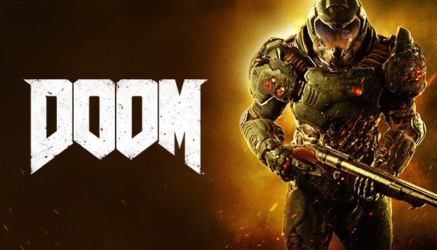

League Of Legends

Doom

Doom es un icónico juego de disparos en primera persona (FPS) lanzado originalmente en 1993 por id Software. El juego se desarrolla en un futuro distópico en el que el jugador asume el papel de un marine espacial conocido como Doomguy. La trama se centra en una invasión demoníaca desatada en las instalaciones marcianas de la Union Aerospace Corporation (UAC).
En el juego, el jugador se embarca en una misión para detener la propagación del mal, recorriendo una serie de niveles llenos de acción y horrores demoníacos. A lo largo del juego, se utilizan una amplia variedad de armas devastadoras para enfrentarse a hordas de enemigos infernales. Doom se caracteriza por su ritmo rápido, su combate frenético y su violencia visceral, lo que lo convierte en una experiencia emocionante y desafiante.
A lo largo de los años, la franquicia Doom ha evolucionado con varias secuelas y remakes que han llevado la experiencia del juego a nuevos niveles. Doom ha dejado una huella duradera en la industria de los videojuegos, definiendo el género de los FPS y siendo reconocido como uno de los juegos más influyentes de todos los tiempos. En resumen, Doom es un juego legendario que combina una narrativa apocalíptica con una acción intensa y despiadada contra enemigos demoníacos.
Doom es un legendario juego de disparos en primera persona (FPS) lanzado en 1993 por id Software. La historia del juego se desarrolla en un futuro distópico en el que las instalaciones marcianas de la Union Aerospace Corporation (UAC) son invadidas por fuerzas demoníacas provenientes del infierno.
El jugador asume el papel de un marine espacial conocido como Doomguy, quien se encuentra atrapado en medio de esta invasión infernal. Armado con una variedad de armas poderosas, el objetivo de Doomguy es abrirse camino a través de una serie de niveles infestados de demonios y detener la propagación del mal.
A lo largo del juego, se revela más sobre el origen de la invasión demoníaca y la corrupción de las instalaciones de la UAC. Doom destaca por su acción frenética, su ritmo rápido y su atmósfera aterradora. Ha sido aclamado por su jugabilidad innovadora, su diseño de niveles desafiantes y su influencia en el género de los FPS.
La franquicia Doom ha continuado expandiéndose con varias secuelas y remakes a lo largo de los años, manteniendo su estatus como un ícono de los videojuegos. La historia de Doom es una lucha épica contra las fuerzas del infierno, encarnada en la figura del valiente Doomguy, y su legado perdura como uno de los pilares fundamentales de los juegos de disparos.